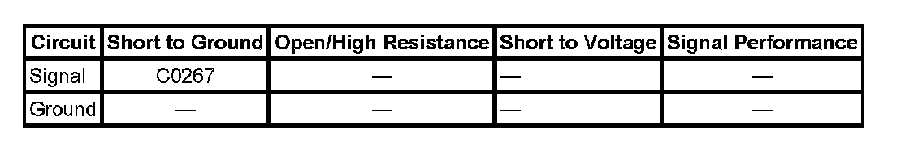

C0267
DTC C0267
DTC Descriptor
DTC C0267
Low Brake Fluid Indicated
Diagnostic Fault Information
Perform the Diagnostic System Check - Vehicle prior to using this diagnostic procedure. Initial Inspection and Diagnostic Overview

Circuit/System Description
The brake fluid level switch monitors the level of brake fluid in the master cylinder. When the instrument panel cluster (IPC) sees the brake fluid level switch input grounded, it turns ON the Red Brake Warning indicator and sends a serial data message to the electronic brake control module (EBCM) that tells the EBCM that the brake fluid level is low.
Conditions for Running the DTC
The ignition is ON.
Conditions for Setting the DTC
Low brake fluid is detected.
Action Taken When the DTC Sets
^ The EBCM disables the Antilock Brake System (ABS)/Traction Control System (TCS) dynamic rear proportion (DRP) and (VSES) Vehicle Stability Enhancement System.
^ The ABS indicator turns ON.
^ The Traction Control indicator turns ON.
^ The Red Brake Warning indicator turns ON.
Conditions for Clearing the DTC
^ The condition for the DTC is no longer present.
^ The EBCM automatically clears the history DTC when a current DTC is not detected in 100 consecutive drive cycles.
Reference Information
Schematic Reference
Hydraulic Brake Schematics
Connector End View Reference
Antilock Brake System Connector End Views
Electrical Information Reference
^ Circuit Testing
^ Connector Repairs
^ Testing for Intermittent Conditions and Poor Connections
^ Wiring Repairs
Scan Tool Reference
Scan Tool Data List for EBCM
Circuit/System Verification
Inspect the master cylinder reservoir for the proper brake fluid level.
If brake fluid level is low, refer to Brake Fluid Loss Diagnostic Information and Procedures. Brake Fluid Loss
Circuit/System Testing
Note: This test should only be performed if brake fluid is not low.
1. With the ignition OFF, disconnect the brake fluid level switch connector.
2. With the ignition ON, use a scan tool to observe the Brake Fluid Switch parameter.
^ If the Brake Fluid Switch parameter is OK, replace the brake fluid level switch.
^ If the Brake Fluid Switch parameter is Low, repair short to ground in signal circuit.
3. If all circuits test normal replace the IPC.
Repair Instructions
^ Master Cylinder Fluid Level Sensor Replacement
^ Control Module References for EBCM
Repair Verification
Diagnostic Repair Verification